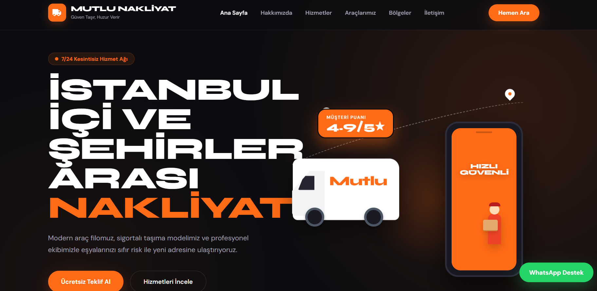
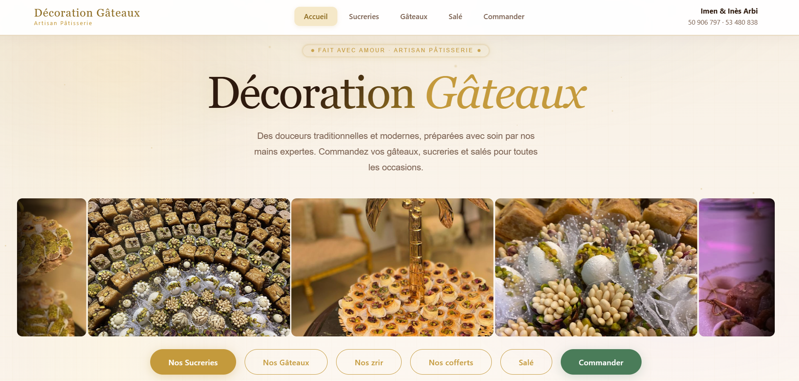
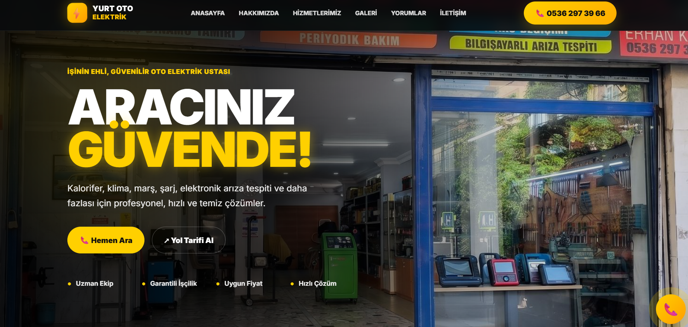
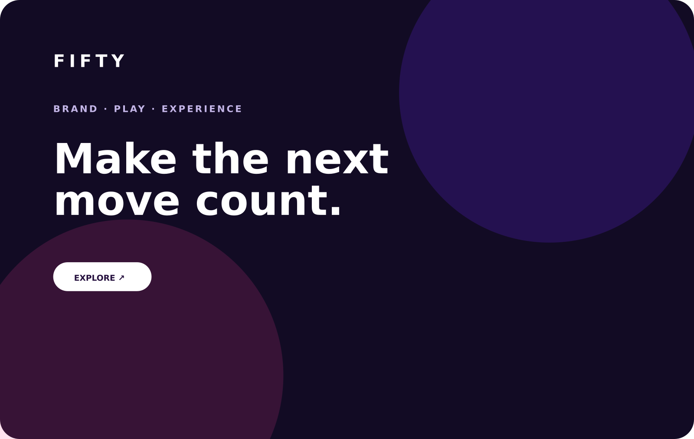

AuraDigital / Portfolio
Selected work · 2026
İşimiz kendini anlatsın.
Farklı sektörlerdeki işletmeler için tasarladığımız dijital deneyimler. Her projede aynı şablonu değil, markanın ihtiyacına uyan sistemi kuruyoruz.
WebsitesDigital presenceBrand systemsMobile-first


